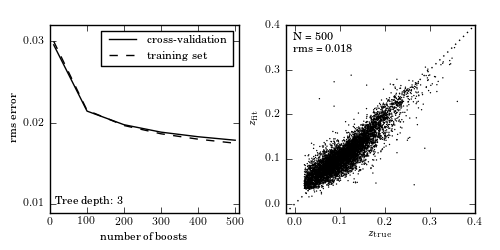

Photometric Redshifts by Random Forests¶
Figure 9.16
Photometric redshift estimation using gradient-boosted decision trees, with 100 boosting steps. As with random forests (figure 9.15), boosting allows for improved results over the single tree case (figure 9.14). Note, however, that the computational cost of boosted decision trees is such that it is computationally prohibitive to use very deep trees. By stringing together a large number of very naive estimators, boosted trees improve on the underfitting of each individual estimator.
{kind=link}
@pickle_results: using precomputed results from 'photoz_boosting.pkl'
# Author: Jake VanderPlas
# License: BSD
# The figure produced by this code is published in the textbook
# "Statistics, Data Mining, and Machine Learning in Astronomy" (2013)
# For more information, see http://astroML.github.com
# To report a bug or issue, use the following forum:
# https://groups.google.com/forum/#!forum/astroml-general
import numpy as np
from matplotlib import pyplot as plt
from sklearn.ensemble import GradientBoostingRegressor
from astroML.datasets import fetch_sdss_specgals
from astroML.decorators import pickle_results
#----------------------------------------------------------------------
# This function adjusts matplotlib settings for a uniform feel in the textbook.
# Note that with usetex=True, fonts are rendered with LaTeX. This may
# result in an error if LaTeX is not installed on your system. In that case,
# you can set usetex to False.
from astroML.plotting import setup_text_plots
setup_text_plots(fontsize=8, usetex=True)
#------------------------------------------------------------
# Fetch and prepare the data
data = fetch_sdss_specgals()
# put magnitudes in a matrix
mag = np.vstack([data['modelMag_%s' % f] for f in 'ugriz']).T
z = data['z']
# train on ~60,000 points
mag_train = mag[::10]
z_train = z[::10]
# test on ~6,000 distinct points
mag_test = mag[1::100]
z_test = z[1::100]
#------------------------------------------------------------
# Compute the results
# This is a long computation, so we'll save the results to a pickle.
@pickle_results('photoz_boosting.pkl')
def compute_photoz_forest(N_boosts):
rms_test = np.zeros(len(N_boosts))
rms_train = np.zeros(len(N_boosts))
i_best = 0
z_fit_best = None
for i, Nb in enumerate(N_boosts):
try:
# older versions of scikit-learn
clf = GradientBoostingRegressor(n_estimators=Nb, learn_rate=0.1,
max_depth=3, random_state=0)
except TypeError:
clf = GradientBoostingRegressor(n_estimators=Nb, learning_rate=0.1,
max_depth=3, random_state=0)
clf.fit(mag_train, z_train)
z_fit_train = clf.predict(mag_train)
z_fit = clf.predict(mag_test)
rms_train[i] = np.mean(np.sqrt((z_fit_train - z_train) ** 2))
rms_test[i] = np.mean(np.sqrt((z_fit - z_test) ** 2))
if rms_test[i] <= rms_test[i_best]:
i_best = i
z_fit_best = z_fit
return rms_test, rms_train, i_best, z_fit_best
N_boosts = (10, 100, 200, 300, 400, 500)
rms_test, rms_train, i_best, z_fit_best = compute_photoz_forest(N_boosts)
best_N = N_boosts[i_best]
#------------------------------------------------------------
# Plot the results
fig = plt.figure(figsize=(5, 2.5))
fig.subplots_adjust(wspace=0.25,
left=0.1, right=0.95,
bottom=0.15, top=0.9)
# left panel: plot cross-validation results
ax = fig.add_subplot(121)
ax.plot(N_boosts, rms_test, '-k', label='cross-validation')
ax.plot(N_boosts, rms_train, '--k', label='training set')
ax.legend(loc=1)
ax.set_xlabel('number of boosts')
ax.set_ylabel('rms error')
ax.set_xlim(0, 510)
ax.set_ylim(0.009, 0.032)
ax.yaxis.set_major_locator(plt.MultipleLocator(0.01))
ax.text(0.03, 0.03, "Tree depth: 3",
ha='left', va='bottom', transform=ax.transAxes)
# right panel: plot best fit
ax = fig.add_subplot(122)
ax.scatter(z_test, z_fit_best, s=1, lw=0, c='k')
ax.plot([-0.1, 0.4], [-0.1, 0.4], ':k')
ax.text(0.04, 0.96, "N = %i\nrms = %.3f" % (best_N, rms_test[i_best]),
ha='left', va='top', transform=ax.transAxes)
ax.set_xlabel(r'$z_{\rm true}$')
ax.set_ylabel(r'$z_{\rm fit}$')
ax.set_xlim(-0.02, 0.4001)
ax.set_ylim(-0.02, 0.4001)
ax.xaxis.set_major_locator(plt.MultipleLocator(0.1))
ax.yaxis.set_major_locator(plt.MultipleLocator(0.1))
plt.show()